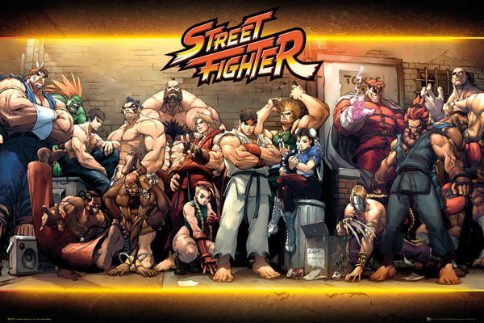

.png)

L’histoire de Street Fighter se déroule dans un monde où des combattants venus des quatre coins du globe s’affrontent lors de tournois d’arts martiaux, chacun poursuivant ses propres objectifs. Au centre de cette histoire se trouve Ryu, un guerrier solitaire en quête de perfection, accompagné de son rival et ami Ken Masters. À travers leurs voyages, ils croisent de nombreux combattants comme Chun-Li ou Guile, souvent liés à la lutte contre M. Bison, le chef de l’organisation criminelle Shadaloo, qui cherche à dominer le monde grâce à une énergie maléfique appelée Psycho Power. En parallèle, un autre pouvoir plus sombre, le Satsui no Hado, joue un rôle clé dans le destin de certains combattants, notamment Akuma, qui en a fait sa source de puissance, et Ryu, qui tente de le maîtriser sans y succomber. Entre rivalités, quêtes personnelles et affrontements décisifs, Street Fighter développe un univers où le combat est autant une épreuve physique qu’un chemin spirituel vers la maîtrise de soi.